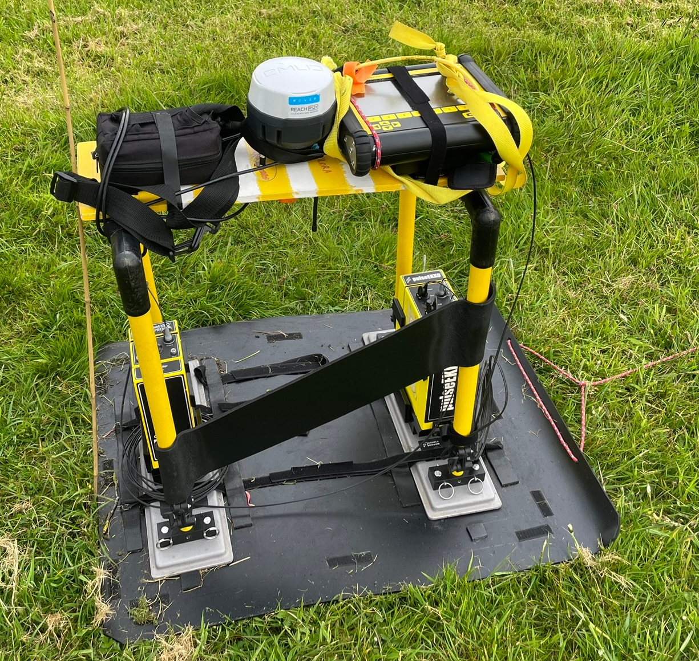
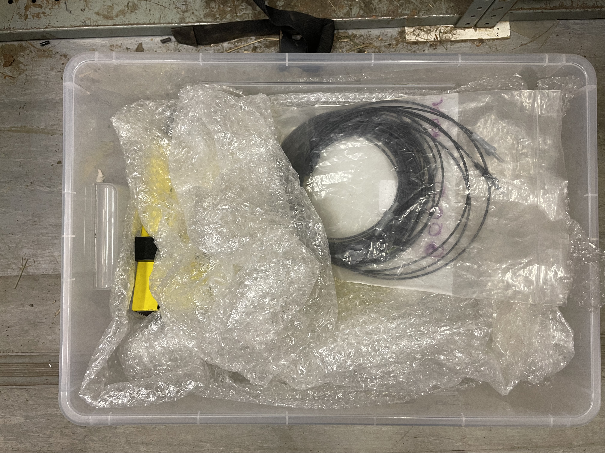
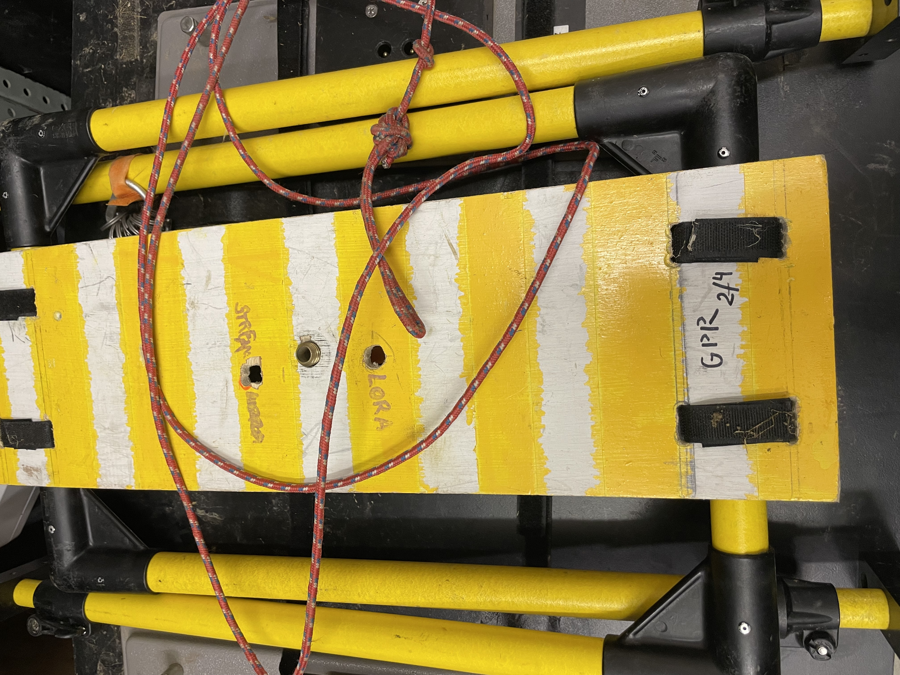
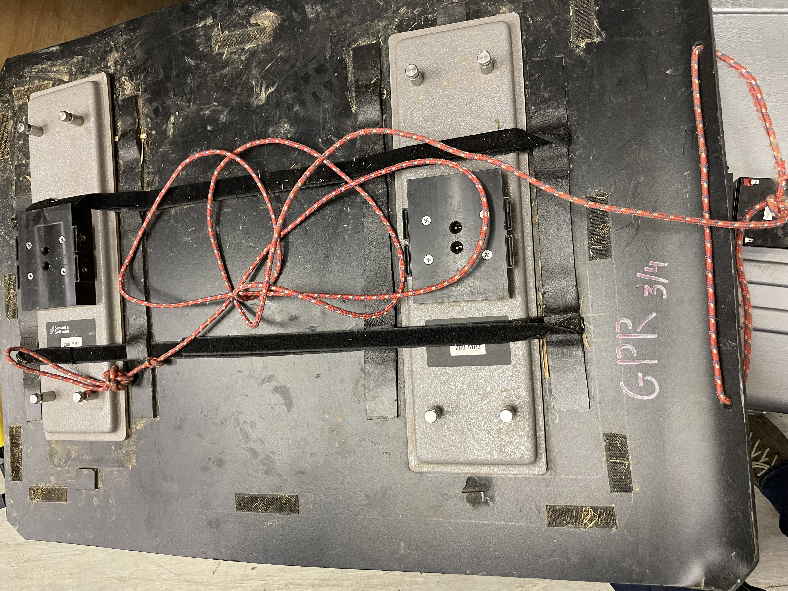
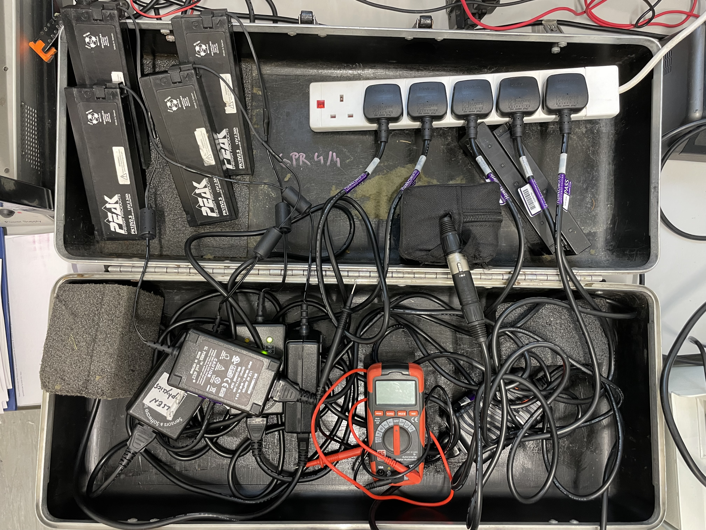

New GPR all-in-one setup for 200 MHz + checklist
The reserach blog of Stefan Nielsen

Use velcro bands to secure the equipment on the top yellow board. Screw-on GPS in the middle hole, use side holes for antenna and RJ232 comm cable. Make sure all metal cables (non-optic fibre) are tightly taped with velcro bands and do not dangle in any way! Clip-on the diagonal black plastic slab to allow frame stiffness. Secure optic-fibre excess loops with velcro bands, treat optic fibre gently and avoid bend/twist. **New compact transport kit: Four main components:**
 1/4) Transparent box containing receiver, transmitter, console, cables. Bubble wrap for damping
---
1/4) Transparent box containing receiver, transmitter, console, cables. Bubble wrap for damping
---

2/4 ) Handle bars and board to mount console with its battery and GPS ---
3/4) Antennas (200 MHz), single skating board, pulling rope, vlecro straps ---
4/4) Black valise with chargers and batteries. - 4 chargers for Rx / Tx batteries. - 1 charger for the console battery - 6 Rx/Tx batteries. - 1 Console battery. - connecting cabels/plugs - multiplug socket - foam damperbloc - optional -> tester